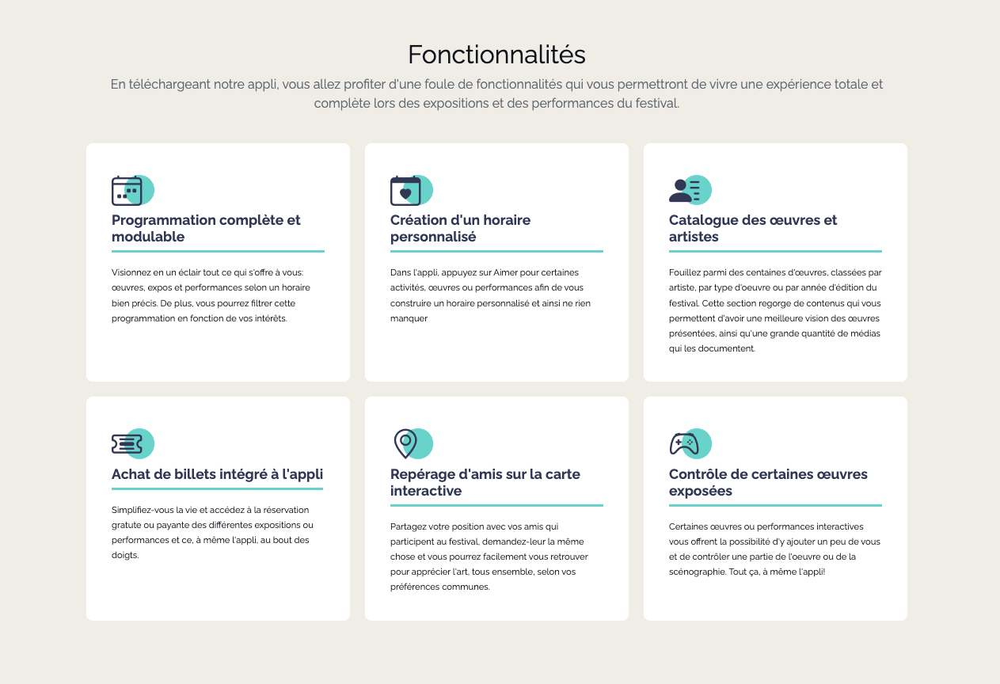

Note pour tous
JAMAIS d’attribut style directment dans les balises HTML. Soit vous utilisez les classes utilitaires Bootstrap, soit vous stylisez vous-même avec des classes custom, via votre feuille de styles. Suivez les instructions lorsqu'il est mentionné d'utiliser les classes utilitaires Bootstrap.
Section Fonctionnalités
2 exemples de résultats possibles pour cette section (mais vous avez une certaine flexibilité) 👇

 Bien que vous ayez préalablement designé votre page, vous devez tout de même suivre les instructions de ce devoir. Libre à vous par la suite d’ajouter les détails de votre maquette mais ces instructions-ci absolument doivent être suivies avant de personnaliser votre page (bref le résultat final doit conserver les instructions ci-bas).
Si ce n’est pas le cas, ajoutez votre section hero dans la balise main
Sous la section Hero, créez une 2e section, identifiez-la section-features. Ce sera la section qui présente les fonctionnalités de l’appli que vous présentez au public. Il y en a 6. Le texte à utiliser se trouve dans le wiki du cours 4 (groupe H2023). Pour créer cette section, utilisez la balise sémantique la plus appropriée. Sachez aussi que cette section fera office de rangée Bootstrap. Ajoutez les classes qui sont de mise.
Dans cette section ajoutez un conteneur Bootstrap qui lui-même contiendra 2 rangées. Dans la première rangée, ajoutez un titre de niveau 2 nommé Fonctionnalités suivi d’un paragraphe qui introduit la section (le texte est disponible dans le wiki).
Dans la 2e rangée, créez 6 colonnes égales. Par défaut, les colonnes s’affichent sur toute la largeur de la rangée. À partir du breakpoint md, on verra 2 colonnes par rangée, et à partir du breakpoint lg, on verra 3 colonnes par rangée (excepté si vous choisissez d'avoir des cartes horizontales, on gardera alors 2 colonnes par rangée pour le breakpoint lg (je fais référence au style de carte du 2e aperçu ci-haut).
Dans chaque colonne, (commencez par la première et vous pourrez dupliquer lorsque complété), créez une carte Bootstrap. Chaque carte Bootstrap devra contenir le titre et la description de la fonctionnalité. Les cartes ne sont pas cliquables (elles ne mènent pas à une autre page ou autre section elles n’existe que pour présenter le contenu.
Va voir la documentation sur les icônes Bootstrap et installe le paquet d'icône via CDN, soit avec la balise link ou via @import dans le css, à ta guise.
Chaque carte Bootstrap devra accueillir une icône (icone Bootstrap). Utiliser la méthode Icon Font (voir documentation liée au point précédent). Vous n'êtes pas contraints à utiliser les même icônes que les aperçus ci-haut. Allez-y avec votre intuition.
Appliquez le style qui vous convient selon votre design. Vous avez aussi la possibilité d’explorer autre chose au niveau du style, pas une nécessité de vous coller à votre design. Il faut que les cartes sortent un peu du look classique avec le petit filet gris autour, amusez-vous à explorer les possibilités. Ce peut-être des cartes horizontales (en 2 colonnes) ou verticales (icone, titre, texte, l’une en dessous de l’autre). À vous de voir !
Sur les rangées et les colonnes de la section actuelle, si vous souhaitez ajouter une marge en haut et en bas, ainsi que réduire la largeur les gouttières entre les colonnes, ajoutez les classes Bootstrap en conséquence.
Bien que vous ayez préalablement designé votre page, vous devez tout de même suivre les instructions de ce devoir. Libre à vous par la suite d’ajouter les détails de votre maquette mais ces instructions-ci absolument doivent être suivies avant de personnaliser votre page (bref le résultat final doit conserver les instructions ci-bas).
Si ce n’est pas le cas, ajoutez votre section hero dans la balise main
Sous la section Hero, créez une 2e section, identifiez-la section-features. Ce sera la section qui présente les fonctionnalités de l’appli que vous présentez au public. Il y en a 6. Le texte à utiliser se trouve dans le wiki du cours 4 (groupe H2023). Pour créer cette section, utilisez la balise sémantique la plus appropriée. Sachez aussi que cette section fera office de rangée Bootstrap. Ajoutez les classes qui sont de mise.
Dans cette section ajoutez un conteneur Bootstrap qui lui-même contiendra 2 rangées. Dans la première rangée, ajoutez un titre de niveau 2 nommé Fonctionnalités suivi d’un paragraphe qui introduit la section (le texte est disponible dans le wiki).
Dans la 2e rangée, créez 6 colonnes égales. Par défaut, les colonnes s’affichent sur toute la largeur de la rangée. À partir du breakpoint md, on verra 2 colonnes par rangée, et à partir du breakpoint lg, on verra 3 colonnes par rangée (excepté si vous choisissez d'avoir des cartes horizontales, on gardera alors 2 colonnes par rangée pour le breakpoint lg (je fais référence au style de carte du 2e aperçu ci-haut).
Dans chaque colonne, (commencez par la première et vous pourrez dupliquer lorsque complété), créez une carte Bootstrap. Chaque carte Bootstrap devra contenir le titre et la description de la fonctionnalité. Les cartes ne sont pas cliquables (elles ne mènent pas à une autre page ou autre section elles n’existe que pour présenter le contenu.
Va voir la documentation sur les icônes Bootstrap et installe le paquet d'icône via CDN, soit avec la balise link ou via @import dans le css, à ta guise.
Chaque carte Bootstrap devra accueillir une icône (icone Bootstrap). Utiliser la méthode Icon Font (voir documentation liée au point précédent). Vous n'êtes pas contraints à utiliser les même icônes que les aperçus ci-haut. Allez-y avec votre intuition.
Appliquez le style qui vous convient selon votre design. Vous avez aussi la possibilité d’explorer autre chose au niveau du style, pas une nécessité de vous coller à votre design. Il faut que les cartes sortent un peu du look classique avec le petit filet gris autour, amusez-vous à explorer les possibilités. Ce peut-être des cartes horizontales (en 2 colonnes) ou verticales (icone, titre, texte, l’une en dessous de l’autre). À vous de voir !
Sur les rangées et les colonnes de la section actuelle, si vous souhaitez ajouter une marge en haut et en bas, ainsi que réduire la largeur les gouttières entre les colonnes, ajoutez les classes Bootstrap en conséquence.
Notes de cours 📚
Cartes
Permettent de générer rapidement et facilement des cartes
Utilitaires
Bootstrap dispose de nombreuses classes utilitaires/d'aide permettant de styliser rapidement les éléments sans utiliser de code CSS.
Grille
Système de grille Bootstrap pour un mise en page facile et réactive
Section Témoignages
Sous la section section-features, créez une 3e section, identifiez-la section-testimonials. Ce sera la section des témoignages de gens qui sont contents de l’appli.
Comme la section fonctionnalités, ajoutez deux rangées, la première contenant une titre Témoignages et un paragraphe qui présente la section.
Dans la 2e rangée, créez 6 colonnes de largeur identique. Par défaut, les colonnes s’affichent sur toute la largeur de la rangée. À partir du breakpoint sm, on verra 2 colonnes par rangée. À à partir du breakpoint lg, on verra 4 colonnes par rangée., donc la 2e rangée de carte témoignage n’en contiendra que 2, trouvez un moyen de les centrer dans leur propre rangé.
La carte contient une image de la personne qui témoigne, tout en haut, vous pouvez utiliser ce site pour aller chercher des portrait photographique d'hommes et de femmes. Choisissez le format "petit". Prenez le temps de télécharger les images et les classer dans vos assets. Appliquez à l’image une hauteur à votre guise autour de height: 20vh; afin que sa dimension soit adaptable avec la dimension de l’écran (vh = view height). Positionnez l’image dans son cadre avec la propriété object-fit et object-position.
Sous l’image, le nom de la personne qui témoigne en tant que titre de la carte.
Note : n’oubliez pas d’ajouter les balises et classes nécessaires pour formatter une carte Bootstrap comme il se doit.
Sous le titre de la carte, ajoutez un témoigne de votre cru. Soyez sympa. 😊
Stylisez un peu les cartes. Je vous ajoute cependant ajoute un style obligatoire en ajoutant une des icônes “quote” de Boostrap, soit en arrière-plan, en haut ou au coin de la carte, en filigrane, un peu superposé ou autre idée de placement.
Sur toutes les sections de votre page (et il y en aura d’autres à venir), assurez-vous d’avoir un padding haut et bas assez large pour laisser respirer le contenu. Assurez-vous aussi que ce padding est constant de section en section. Utilisez les classes utilitaires Boostrap pour générer ce padding.
Assurez-vous aussi d’alterner la couleur de fond de chacune de vos section pour qu’on voit bien la séparation de chacune.
Notes de cours 📚
Cartes
Permettent de générer rapidement et facilement des cartes
Utilitaires
Bootstrap dispose de nombreuses classes utilitaires/d'aide permettant de styliser rapidement les éléments sans utiliser de code CSS.
Grille
Système de grille Bootstrap pour un mise en page facile et réactive